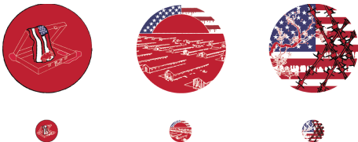

3 Icons
ART 155-02 Visual Communication I
Nico van Dongen
Spring 2022

When assigned the 3 icons project, I instantly thought about basing my icons around something historical yet not widely educated on. I thought about anti-Asian sentiments in the Bay and San Francisco, and about the several landmarks that served as beacons for immigrants and other POC. I then focused on the issue of Japanese internment and its dark history.
Some themes I chose were blood, red, and the American flag. These elements unite my 3 icons into one narrative. Throughout the icons, the US flag becomes larger and larger until it covers the entire icon; however, it is still in the background. Blood also increases in quantity and volume, from a small puddle underneath the suitcase to the red bands of the flag bleeding down. One last theme I had was the Japanese red sun. I chose to have it the same tone as the one on the Japanese flag to keep it authentic. Being centered on the page, the sun 1) serves as the hot sun in the desert of the internment camps, 2) contrasts against the US flag behind it, and 3) is mostly covered by the internment camps, showing how the Japanese identity was suppressed and marginalized through legal actions.This project forced me to not be so literal; I had to think about how to represent events and ideas through simple images. My process included a lot of rough sketches of ideas, including the Golden Gate Bridge lined with barbed wire and the Japanese Peace Pagoda covered in barbed wire. It took me a while to find some ideas that were a little more abstract while still representing the topic. However, the social justice aspect also forced me to be bold in my statement about the crimes committed against the Japanese American population.